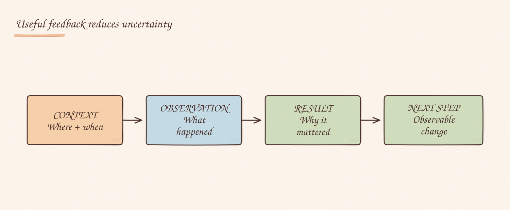
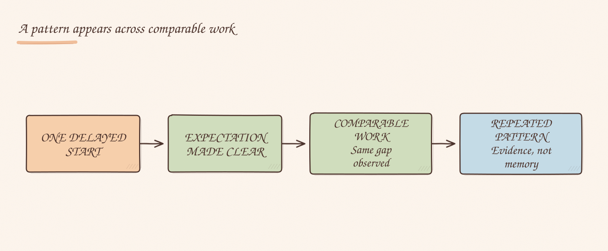

This is the second article in a series about expectations, feedback and formal performance management. A ladder defines the bar. Feedback helps someone understand where their work currently sits against it.
Many organisations call the annual review their performance-management process. I don't think it is. By then, most of the management has already happened — or failed to happen.
The review can summarise evidence, compare expectations and make a formal decision. It cannot compensate for months of vague direction, delayed feedback or conversations a manager avoided.
The real performance system is much less formal: it is the feedback someone receives while the work is still happening.
Feedback should reduce uncertainty
The point of feedback is not to get the manager's frustration off their chest. It is to help someone understand what happened, why it mattered and what they should do differently next time.
“You need to show more ownership” expresses dissatisfaction. It does not explain the gap.
What I said was closer to this:
When the issue was difficult to reproduce, you brought in several people before investigating the relevant code paths. We handle many problems without reliable reproduction steps, so independent investigation is part of the role. On the next issue, document what you checked, your current hypotheses and the evidence you need before escalating.
That gave the person something they could act on, and it gave me something I could observe. I also had to return to it later. Feedback without follow-through would have left both of us guessing whether enough had changed.
I find four elements are usually enough:
This is not a framework I invented. It is closest to Radical Candor's CORE model: Context, Observation, Result and Expected Next Steps. CORE was itself inspired by the Center for Creative Leadership's Situation–Behavior–Impact model, usually called SBI.
The practical difference is small but useful. SBI is very good at keeping feedback about a specific behaviour and its impact, instead of turning it into a judgement about someone's character. CORE adds what happens next. In my version, I also connect the result to the expectations of the role and make the next step observable. Otherwise someone can leave understanding the past but still unsure what “better” looks like.
The career ladder provides the reference point. The work provides the evidence. Feedback connects the two.

One pattern is enough for one conversation
Managers often delay feedback until several frustrations have piled up. When they finally speak, the conversation becomes a list: delivery is slow, communication is weak, ownership is missing, colleagues are frustrated and impact is below expectations.
This may feel thorough to the manager. To the employee it is usually just a wall of criticism, especially when some items are examples and others are interpretations.
I had one case where the useful developmental feedback came down to a single pattern: escalating difficult bugs too early. I started with specific recognition, named the pattern, used a recent example, explained why deeper investigation mattered and made one request.
Most importantly, the feedback did not turn a skill gap into a personality judgement. It treated premature escalation as an investigation habit that could be coached.
That distinction matters. “You are not independent” sounds fixed. “Before escalating, investigate these areas and document what you found” creates a route forward.
Evidence should be collected while it is fresh
Performance concerns rarely arrive as one decisive event. They emerge as a pattern across ordinary work.
In another case I handled, I tracked when work was assigned, when it actually started, how much senior intervention it required and whether it reached completion. One delayed task meant little. Similar gaps across several appropriately scoped tasks became meaningful.
The point of this record was not to build a case against someone. It was to distinguish an impression from a repeated problem.
Memory is a poor performance system. Recent failures dominate. Quiet contributions disappear. A manager who is already frustrated will remember events differently from an employee who believed things were improving.
Documenting evidence as it happens protects both sides. It should include positive evidence too. A record containing only failures is not a performance history; it is a prosecution file.

Diagnose the system before judging the person
After a difficult release, it is easy to conclude that someone was careless. I have been in that situation. When I reviewed what had actually happened with the team, the answer was more mixed.
One person did not know how to test a particular configuration. Another piece of work had been treated as fixed without a linked change. Someone said they could operate a tool, but when asked to do so, the setup and understanding were not there.
These were not the same problem.
The missing test knowledge required training and a runbook. The unlinked change required a validation rule. The claimed capability required a direct conversation about both competence and trust.
The review also found a positive signal: someone was deeply concerned about the failure and took responsibility for it. That ownership should be protected while the skill gap is addressed. Treating every failure as an attitude problem would punish the behaviour the organisation wanted.
Before giving individual feedback, I try to separate four possible causes:
| What happened | Management response |
|---|---|
| The expected capability was never explained | Clarify the role and expected behaviour |
| The person lacks knowledge or practice | Train, document and provide another opportunity |
| The team process allows the failure | Fix the process and assign ownership |
| The person repeatedly does not meet a clear expectation despite feedback and support | Address the performance or conduct gap directly |
If several people are confused or making the same mistake, communication or process is the more likely starting point. Repeated individual failure against a clear, supported expectation is different.
Visibility is not performance
Remote work makes weak signals especially tempting. It is easy to see who talks frequently in Slack, attends every optional meeting, answers fastest and keeps a green status.
Those behaviours may help the team. They may also have little relationship to impact.
Someone can be highly visible while creating work for everyone around them. Another person can communicate less often while making sound decisions, completing difficult work and raising risks at the right moment.
Reliability should still be managed. If someone repeatedly misses agreed meetings, disappears without communicating, fails to respond within the team's working expectations or leaves colleagues unable to depend on them, that is a real issue. The feedback should name those commitments and their effect.
“Be more present” is vague. “Attend the two meetings required for your role, notify the team when you cannot, and post a progress update before the agreed deadline” is clear.
Slack activity is evidence of Slack activity. It is not a performance measure.
Reviews should contain no new information
An annual review can still end in a difficult or disappointing decision. “No surprises” does not mean the employee has to agree with it. It means the expectations, feedback and examples should already be familiar.
A mid-year checkpoint helps if it records three things:
The record then feeds the annual review. The manager does not have to reconstruct the year from recent memory, and the employee has time to respond before a formal rating is decided.
Peer feedback adds perspective, but broad requests for “any thoughts” often collect popularity and sentiment. Ask people who worked closely enough to have evidence about reliability, collaboration, strengths and one change that would make the person more effective.
Calibration can test whether managers apply the bar consistently. It cannot repair feedback that was never delivered.
Withholding feedback does not preserve trust
Managers sometimes soften feedback because they want to preserve trust. I understand the instinct. The problem is that the employee keeps working without information the manager already has.
There is nothing kind about allowing someone to believe they are meeting expectations while privately collecting concerns. There is also nothing fair about introducing months of criticism in one formal conversation.
Direct feedback does not require coldness. Recognise what is working. Separate behaviour from personality. Use evidence. Explain why the change matters. Offer support where support can help. Then make the expectation clear.
Performance management does not begin when the form opens. It is built in ordinary conversations, close enough to the work that the person still has a fair chance to change what happens next.